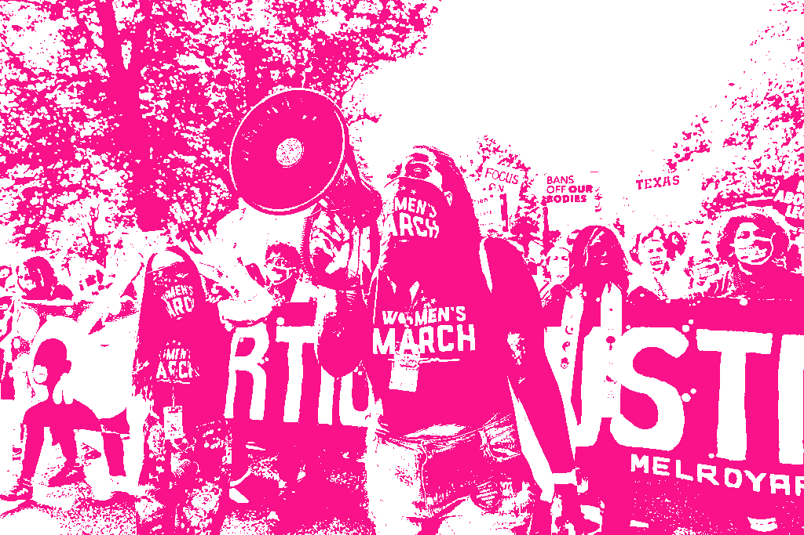
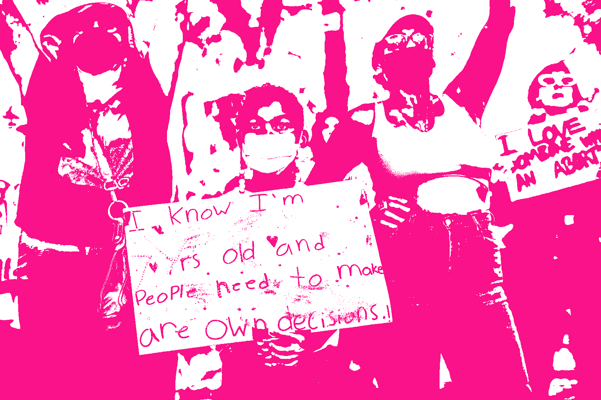
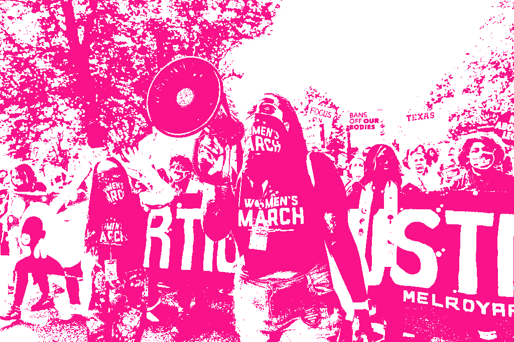
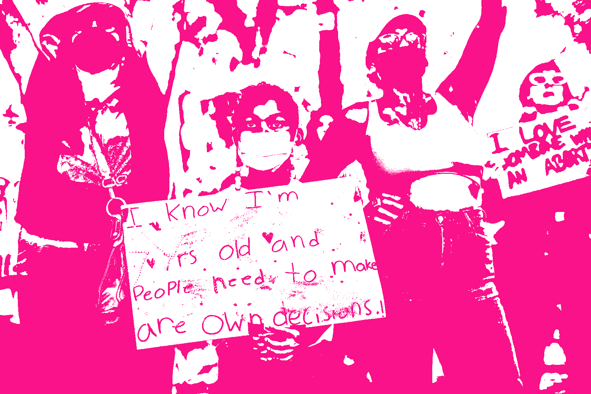

Afro-FemSignage is a visual archive of sorts documenting glimpses of African American feminist activism via poster boards. Through photographs, this website manages to immortalize the demands of Black women in the U.S. from the 1950s to the current ’20s. The overlapping of other social affairs is a reminder of intersectionality amongst African American feminism.
 


